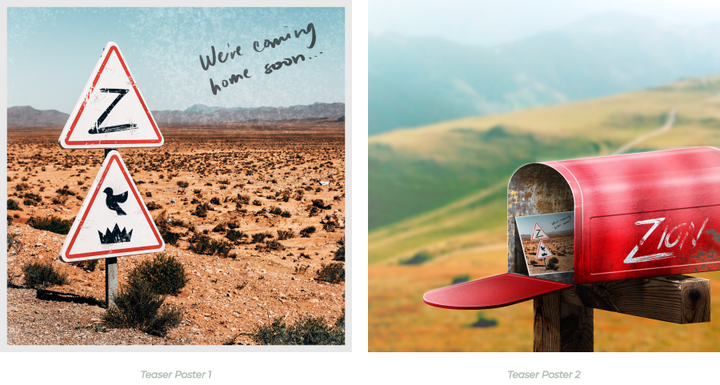
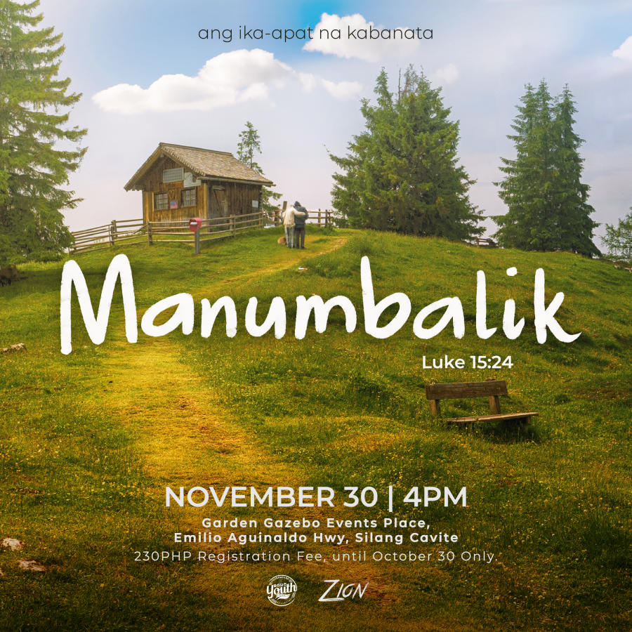
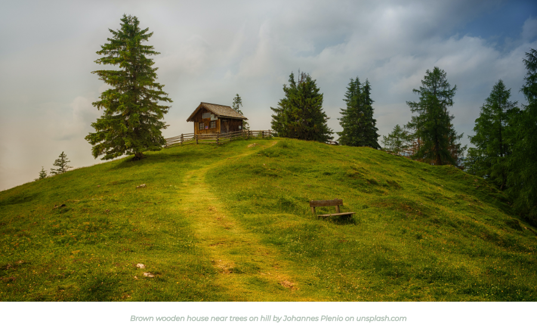
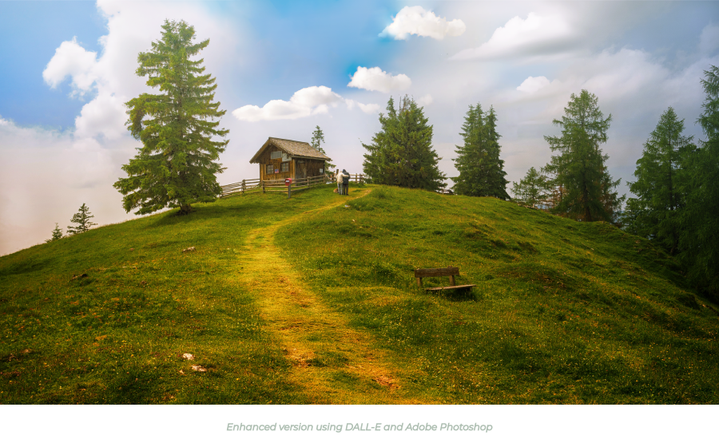
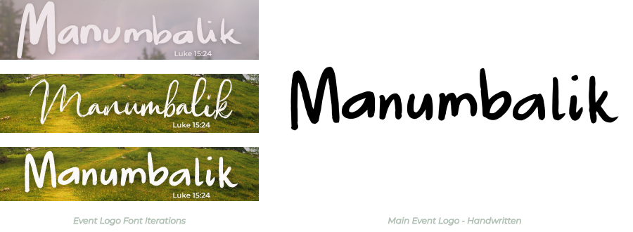
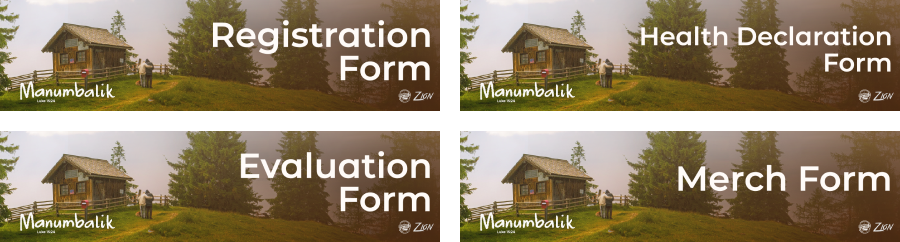
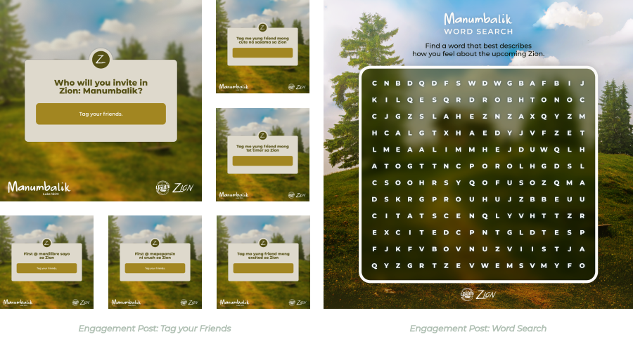
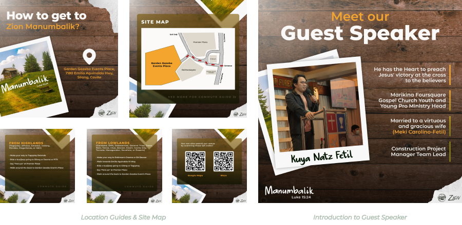
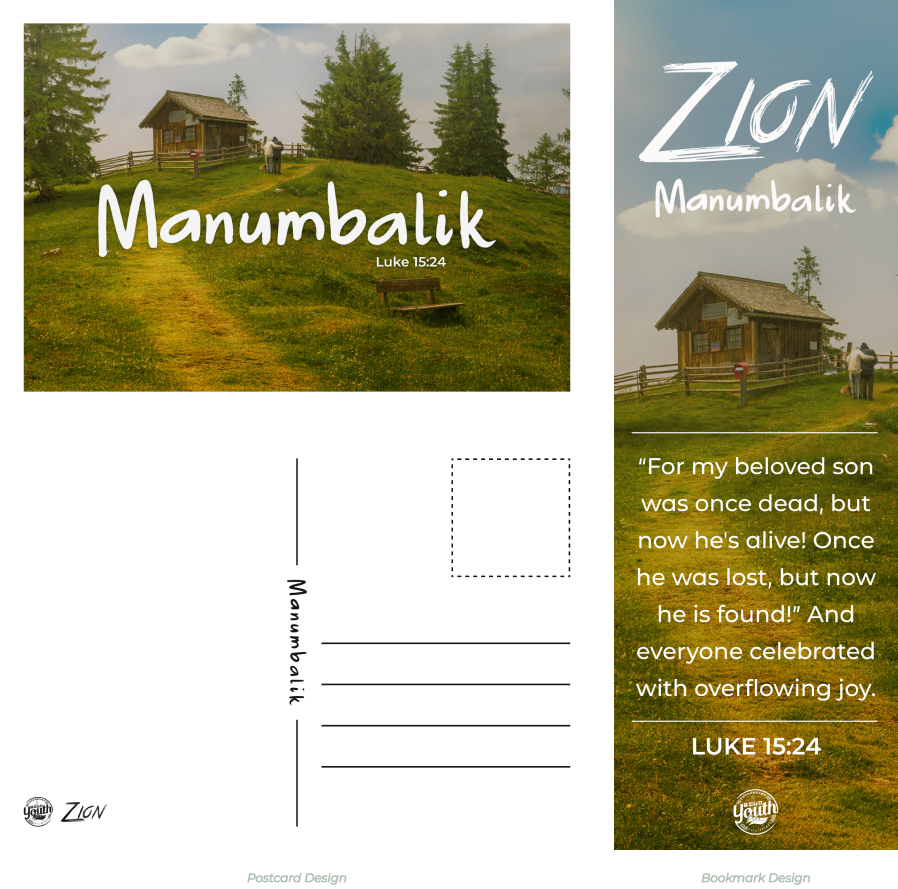

Zion: Manumbalik
A collaboration of the Foursquare Church - Dove & Crown Divisions (formerlly Blue Division), Manubalik is the fourth and final chapter of the Zion worship experience series.
SKILLS
Creative & Art Direction, Graphic Design & Layout, Digital Illustration, Video Editing, Motion Graphics, Social Media Advertising, Typography, and Communication
TOOLBOX
Figma, Adobe Photoshop, Illustrator, Premiere Pro, & After Effects

Event Teaser
For this chapter of Zion, themed around "The Prodigal Son," the Multimedia Team developed the idea of "coming home" as the visual concept. The initial teaser posters depict this narrative.
Teaser 1 resembles a postcard with the message "We're coming home soon..." against a backdrop of arid terrain, symbolizing a harsh environment. Teaser 2 reveals the postcard reaching its destination, subtly suggesting the journey from adversity to the safety of home.
Main Poster
Continuing the story, the main poster reveals the "son" reuniting with his "father" at home. Illustrated are two figures walking towards the house, sharing a heartfelt embrace.
This design remains faithful to the aesthetic of previous chapter posters, featuring realistic landscape photographs as the backdrop.
Design Process
 Finding the ideal backdrop for the poster proved challenging and time-consuming. Consequently, I decided to utilize newly-promoted AI image generation technology to enhance the original photo I had selected. This marked my first attempt into using AI as a tool to aid in my design process. Finally, I refined it using Adobe Photoshop, adjusting the lighting, color, and addressing any minor imperfections.
In the process of choosing the perfect typeface, I experimented with both existing handwritten fonts and my own handwriting. I presented these options to the project heads for their input. Eventually, they favored the one I personally handwrote, citing its ability to evoke intimate and familiar feelings.
Registration and Other Forms
The event registration took place online via Google Forms. To ensure a consistent aesthetic, I created banners to be used in this form, as well as in other forms that needed to be filled out.
Social Media Promotion
 In addition to the initial poster release, we promoted the event through a variety of engagement posts, announcements, and guidelines.
Merch Designs
We also offered a collection of official event merchandise, which included t-shirt designs, stickers, light sticks, postcards, and bookmarks. I was responsible for designing the postcards and bookmarks.
Event Sponsors Recognition
Finally, I created a simple video to acknowledge the official sponsors of our event. This video was showcased live during the event and was also shared on our Facebook page.